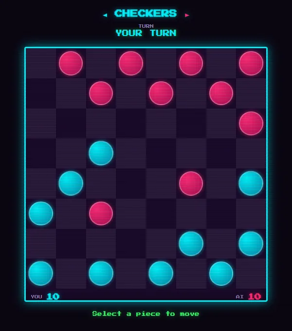
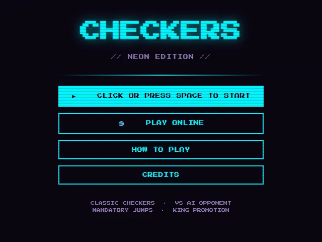
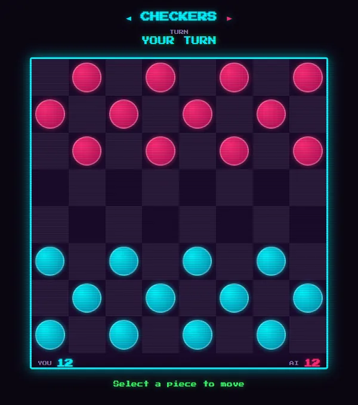

neon edition · mandatory jumps · king promotion
Checkers in the arcade's neon edition, cyan pieces against magenta under CRT scanlines.
Play the computer or a friend online with chat, with mandatory jumps, multi-jump chains and king promotion. The terminal version plays the same computer opponent.


game by magmacrunch media